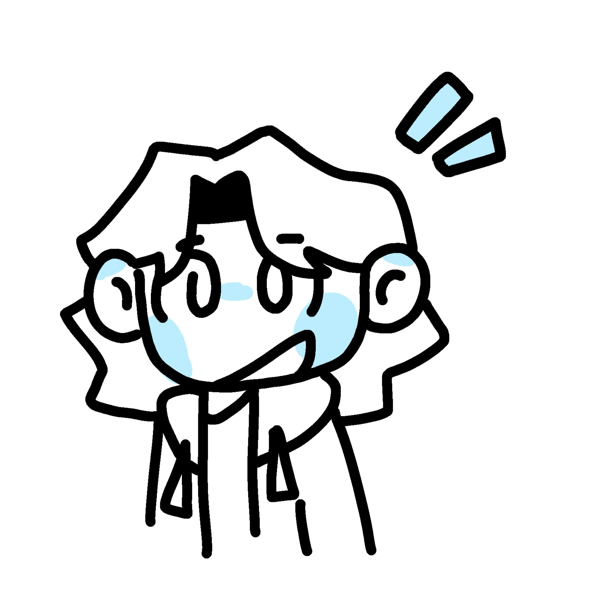

Waarom maken wij deze podcast
Veel mensen weten eigenlijk niet helemaal waar ze terechtkomen als ze naar het buitenland verhuizen. Het is een berg werk en een grote golf informatie die over je heen komt. Vooral als je voor je studie in het buitenland stage gaat lopen. Superspannend natuurlijk! Nieuwe mensen ontmoeten is voor veel mensen al een heel ding, maar nieuwe mensen ontmoeten die een hele andere taal spreken en een compleet andere cultuur hebben is nog veel meer intimiderend. Gelukkig zijn wij er om te helpen. Wij doen ons best om jou te helpen dit wat makkelijker te maken en zulke dingen wat makkelijker te begrijpen.
Kernwaarden
Onderzoek
Wij doen ons best om al je belangrijkste vragen goed te beantwoorden
Eerlijkheid
Wij zijn eerlijk over de dingen die we onderzoeken
Duidelijkheid
Wij doen ons best om jou zo duidelijk mogelijk te informeren.
Frederique Woord
Mijn naam is Frederique en ik ben student aan de Hogeschool van Amsterdam. Ik studeer Communication and Multimedia Design en ik wil later in mijn studie misschien in het buitenland stage lopen of studeren, maar dan wil ik wel graag weten hoe dat gaat. Ik kan niet de enige persoon met die vraag zijn, dus vandaar deze podcast. Veel luisterplezier!
Toria Kruithof
Hoi! Ik ben Toria Kruithof en ik ben samen met Frederique de oprichter van de 'De Grensverleggers'. Ik heb de Havo afgerond en ik ben nu bezig met de studie Communicatie en Multimedia Design aan de Hogeschool van Amsterdam. Als ik op vakantie ga wil ik me graag aanpassen aan de mensen daar, dus daarom wil ik graag deze podcast maken om er meer over te weten te komen. Aangezien wij zelf ook studeren wilden we graag onszelf en anderen helpen met wat ze allemaal moeten regelen om te studeren in het buitenland.
Reviews
Leuke podcast om in de trein naar te luisteren. Ik leer graag wat nieuws over andere culturen
Super veel geleerd van deze podcast! Ik wist precies wat ik nodig had toen ik naar Chili wilde.
Lekker interessant gewoon. Heeft goed geholpen met mijn stage.